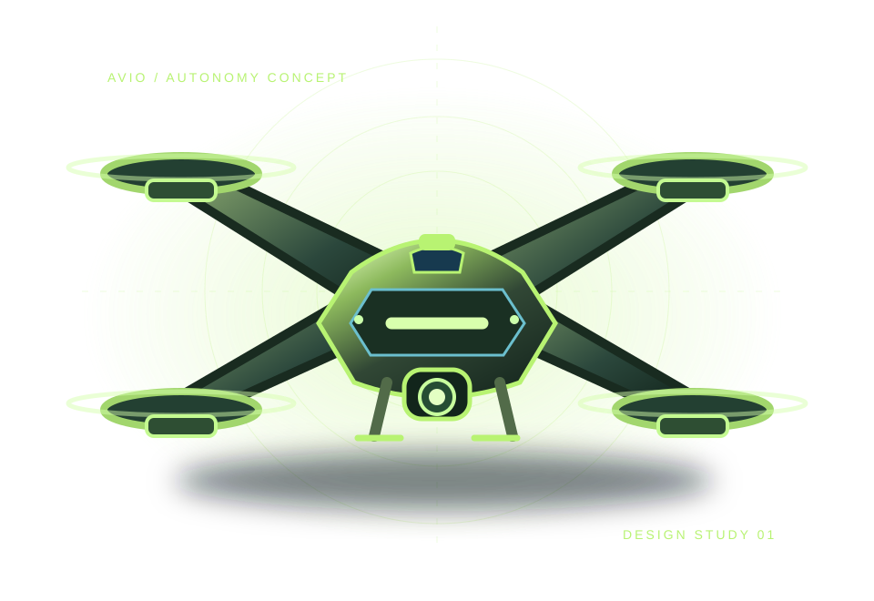

AI Navigation & Computer Vision
Visual perception, localization, mapping, path planning, and obstacle avoidance for capable autonomous flight.
Engineering the next generation of autonomous aerial systems. One connected vision for intelligent navigation, collaborative drone fleets, and infrastructure inspection.

AUTONOMOUS SYSTEMSMULTI-AGENT INTELLIGENCEAVIO is an independent, early-stage robotics initiative exploring how aerial robots can perceive their surroundings, cooperate as teams, and execute useful missions with greater autonomy.
Our goal is to bring advanced robotics research closer to real-world infrastructure challenges through focused engineering, experimentation, and responsible deployment.
Our planned architecture brings perception, team coordination, and mission-specific intelligence into a unified system.
Visual perception, localization, mapping, path planning, and obstacle avoidance for capable autonomous flight.
Multi-drone communication, collaborative mapping, distributed task allocation, and coordinated mission planning.
Intelligent data capture and analysis workflows designed for the inspection of critical physical infrastructure.
A conceptual architecture for the product we're working toward. Capabilities are planned, not presented as validated field performance.
Potential applications we intend to explore as the platform matures.
Solar farms, wind assets, and grid facilities
Bridges and complex physical structures
Large-scale facilities and asset monitoring
Safety and measurable performance matter as much as intelligent algorithms. These principles guide our planned development.
Develop and benchmark mission behaviors in controlled simulation before moving toward physical prototypes.
Design for supervised operation, safe fallback behaviors, clear mission boundaries, and operator visibility.
Explore reusable software components and well-documented interfaces instead of depending on a single aircraft.
Milestones below are targets and may evolve with technical validation and customer discovery.
Customer discovery, architecture, simulation setup.
Integrated navigation and multi-drone simulation.
Test mission workflows and evaluate inspection performance.
Review feasibility, partnerships, and commercial direction.
Safety, regulatory authorization, and intellectual property clearance will be assessed before physical deployments or third-party technology use.
No. AVIO is an independent initiative in its early development phase. The website presents our technical direction and future roadmap, not commercially validated capabilities.
No hardware manufacturing claim is made at this stage. Our initial focus is a modular autonomy software architecture and simulation-driven development.
AVIO does not claim any university, laboratory, or research-project affiliation. Any future collaborations would be announced only after formal agreement.
Yes. Visit the public GitHub repository to follow development or open an issue to start a technical conversation.
Interested in aerial autonomy, robotics research, or a potential collaboration? Start a conversation.